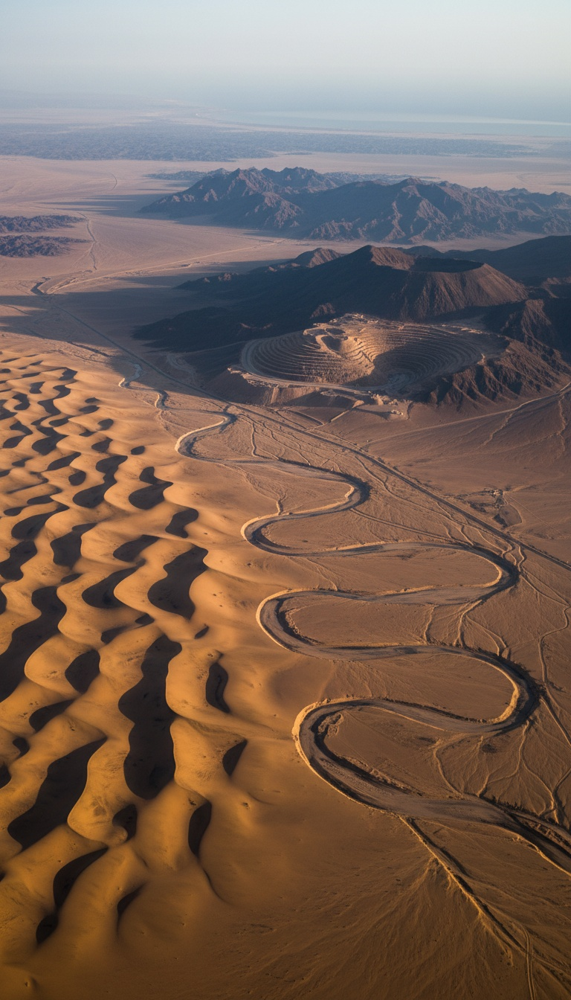

Genesis chapter two is not a poem. It is a route description with four named rivers, a mineral survey, and a destination. Two of the rivers still flow. The gold field it names is still producing ore under a Saudi mining license. You can drive to it.
For two centuries the official position has been that Eden is theological geography, a place that exists on no map because it was never meant to. Then a radar satellite looked under the Arabian desert and found the missing river exactly where the text said it would be. This is the full file.

The Verse That Reads Like a Survey Report
Genesis 2:10-14 names four rivers branching from a single source: the Pishon, the Gihon, the Tigris, and the Euphrates. It does not stop at names. It gives each river a service area. The Pishon winds through the entire land of Havilah, where there is gold. Then the text does something no myth bothers to do. It grades the ore. The gold of that land is good, and aromatic resin and onyx are there too. That is a prospector's field note, not a psalm.
Two of the four rivers are the most documented waterways in human history. The Tigris and the Euphrates framed Sumer, Akkad, Babylon, and Assyria. They appear on every serious map drawn since Ptolemy. So the text scores fifty percent verified before anyone lifts a shovel. The whole argument always hung on the other two.
The Satellite That Found the Pishon
In the early 1990s, Farouk El-Baz, director of the Center for Remote Sensing at Boston University and a veteran of NASA's Apollo landing site selection team, ran satellite imagery and radar data across the Arabian Peninsula. Radar penetrates dry sand. Under the dunes of northern Saudi Arabia, the returns traced a fossil river channel, miles wide in stretches, running more than 530 miles from the Hijaz mountains of western Arabia northeast into the basin at Kuwait.
El-Baz named it the Kuwait River. Its calling card is still sitting on the surface. Kuwait's desert is littered with gravel made of granite and basalt, rock types that do not exist anywhere in Kuwait. That stone was quarried by moving water and hauled hundreds of miles from the Hijaz. Only a major river does that.
In the July/August 1996 issue of Biblical Archaeology Review, James A. Sauer, former curator of the Harvard Semitic Museum, put the pieces on one table. A great river rising in the gold country of western Arabia, wrapping the territory identified with Havilah since antiquity, dying into the Gulf. His article ran under the title The River Runs Dry. The Pishon was real, and a satellite found it before a single spade went in.
The Cradle of Gold
Now hold the phrase land of good gold and open a modern mining map of Saudi Arabia. In the Hijaz mountains, in the same highlands that fed El-Baz's buried river, sits Mahd adh Dhahab. The name translates as the Cradle of the Gold. American mining engineer Karl Twitchell surveyed it in 1932 at the request of King Abdulaziz and found ancient workings on an industrial scale, shafts and tailings left by miners who were dead long before Rome was founded.
The United States Geological Survey studied the site through the 1970s and 1980s and dated the ancient slag heaps on the surface, roughly a million tons of processed waste rock, to around 950 BC. That is the reign of Solomon, the king whose incoming gold from Ophir is itemized in 1 Kings 9:28 down to the talent. USGS geologists put Mahd adh Dhahab on record as the leading candidate for Solomon's mines.
And it never closed. The Saudi Arabian Mining Company, Ma'aden, operates Mahd adh Dhahab today, pulling ore at gold grades that rank among the richest of any producing mine on Earth. Genesis said the gold of Havilah was good. Three thousand years of miners and a modern assay lab say the same thing.
A radar satellite found a 530-mile river buried under the Saudi desert, and it rises in the one mountain range Genesis flagged for gold.
The Fourth River Has an Address Too
The Gihon winds through the land of Cush, and for centuries translators pointed that word at Africa and broke the map. Juris Zarins, the Southwest Missouri State University archaeologist who spent years excavating in Saudi Arabia, closed the loop. Cush in this passage tracks the Kassites, the Kashshu people of the Zagros mountains of western Iran. The river that drains their country into the Gulf is the Karun, and it still delivers water toward the same basin today. Four rivers named. Four rivers found.
Where All Four Rivers Meet
Trace them downstream. The Tigris and Euphrates from the north. The Karun from the east. The fossil Pishon from the southwest. They converge on one spot: the floor of the Persian Gulf. During the last Ice Age that floor was dry land, a green river valley where four waterways braided together, which is precisely the picture Genesis paints of one water system in Eden dividing into four heads.
Zarins laid this out in the May 1987 issue of Smithsonian Magazine, in Dora Jane Hamblin's feature The Search for Eden. Then the meltwater came. As the glaciers died, the oceans rose hundreds of feet and the sea poured through the Strait of Hormuz, drowning the valley by around 6000 BC. In December 2010, archaeologist Jeffrey Rose published in Current Anthropology on the Gulf Oasis, documenting more than sixty settlement sites that appear suddenly around the Gulf's shores roughly 7,500 years ago. A ring of refugees, planting new homes around the grave of an old one.
The Problem Nobody Wants to Touch
The standard reply is that the Genesis writer borrowed river names at random from Mesopotamian scenery. Random borrowing does not grade ore. Random borrowing does not place the gold in the correct mountain range on the far side of a peninsula. And random borrowing cannot describe the Pishon as a flowing river, because the Kuwait River channel went dry thousands of years before the earliest date anyone assigns to the writing of Genesis. Whoever gave those directions was describing a landscape no living person in the writer's era had ever seen.
That leaves one option, and it is the uncomfortable one. The description was carried forward, intact, from people who stood on the Pishon's banks when it ran, across a span of time that predates writing itself. A memory of a real place, with real coordinates, handed down so carefully that a satellite could confirm it in the 1990s.
So run the ledger. The rivers are real, all four. The gold is real, and Ma'aden is still weighing it. The convergence point is real, and it sits under the Persian Gulf on drowned land that nobody has systematically excavated, because marine archaeology has never mounted a full survey of the Gulf floor. The single most important address in the Western world is sitting in shallow water, mapped by a Bronze Age text, and no one is digging.
And here is the part that should keep you up tonight. If the geography in Genesis 2 is a literal, checkable report that satellites keep confirming, then it was never the mythical part of the story. Which forces the real question about everything that text says happened in that garden. If the address is real, what else is? Say it in the comments. I read every one.
Before you go
7 books the Vatican doesn't want you reading. Free PDF, the texts they cut, with sources. Joined by 140+ Inner Circle members.
No spam. Unsubscribe anytime.
Go deeper
The Hidden Canon, Vol. I, Enoch. Jubilees. Thomas. Mary. Judas. 90 pages, 14 chapters, every receipt cited. The books your Bible quietly removed.
Read the Canon →Books that informed this investigation
As an Amazon Associate, Hidden Epoch earns from qualifying purchases. Cost to you: nothing.
Research safely
The VPN we use to research without being tracked. First 3 months free.
Get NordVPN →